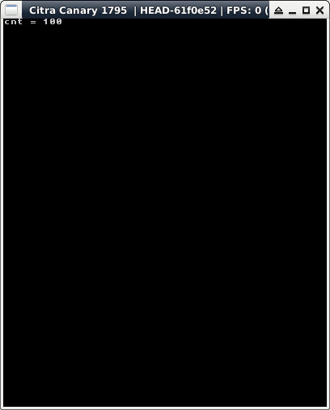

參考資訊：
https://hub.docker.com/r/greatwizard/devkitarm-3ds
main.c
#include <string.h>
#include <malloc.h>
#include <inttypes.h>
#include <stdio.h>
#include <3ds.h>
int cnt = 0;
Handle threadRequest = 0;
Thread threadHandle = NULL;
void threadMain(void *arg)
{
svcWaitSynchronization(threadRequest, U64_MAX);
svcClearEvent(threadRequest);
cnt = 100;
}
int main(void)
{
gfxInitDefault();
consoleInit(GFX_TOP, NULL);
svcCreateEvent(&threadRequest,0);
threadHandle = threadCreate(threadMain, 0, 4096, 0x3f, -2, true);
svcSignalEvent(threadRequest);
threadJoin(threadHandle, U64_MAX);
svcCloseHandle(threadRequest);
printf("cnt = %d\n", cnt);
gspWaitForVBlank();
gfxSwapBuffers();
svcSleepThread(3000000000LL);
gfxExit();
return 0;
}
完成
